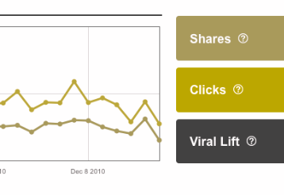
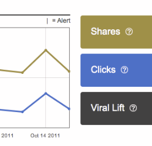
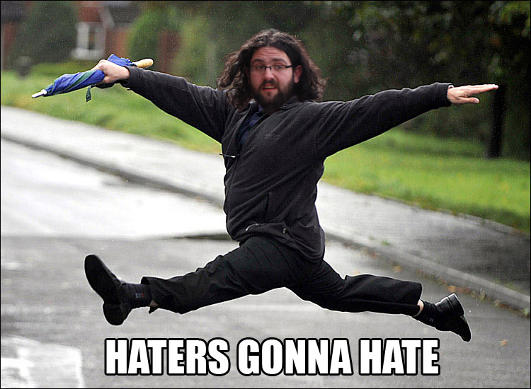

Lessons from Making Millions of Websites More Accessible
Aaron Jorbin @aaronjorbin aaron.jorb.in
AddThis
14 Million Domains
1.3 Billion users every month
What is Accessibility
– W3C
– W3C
What is one thing that you think every developer should know about Accessibility?
It's often the decisions made before a line of code is written that impact accessibility the most – David Kennedy
Keyboard #a11y is a good sell. Power users don't like to use the mouse. Many AT users can't – Eric Wright
Assistive Technology
 Jakob Vogel, from The Noun Project
Jakob Vogel, from The Noun ProjectNot All Problems can be solved with assistive Technology

Product Owners, Designers, Developers
Product Owners
Understand your responsibilities
Prioritizing accessibility has additional benefits
SEO
Device Independence
Inclusive Work Environment
Designers
Color Contrast
Click the Red Button
Check your colors




Caption your Videos
Developers
Use a screen reader
What are the standards and Specs I should care about?
HTML
WAI-ARIA
WCAG 2.0
ATAG 2.0
508
Jorbin's Three laws
If it has hover style, it needs focus style
If it's an anchor tag, it needs an href
If the HTML isn't in the order that is logical and is how things get displayed, you'll want to shoot yourself making it accessible
Decisions
Accessibility starts with Usability
Aim for an appropriate level of supportSome WCAG AAA requirements are ridiculous
The Team Owns Accessibility
Include people with disabilities in your usability researchRecruiting Participants with Disabilities
Tools
Chrome Extensions
Fire Eyes
ColorDeBlind iOS app
Sim Daltonism
Contrast-A
Toucan color palettes
Keyboard-navigable JavaScript widgets
WAI-ARIA Authoring Practices
Creating Accessible Interactive Web Apps Using HTML5
Video Captioning on the Web
Able Gamers
Building An Accessible Site from the ground up
WAI-ARIA Landmark Roles
Mozilla Accessibility
Accessibility Camp
Accessibility is Not a Checklist
-
Knowledge of human users and the social context in which systems are expected to operate become integrated into the computer science agenda, even at the earliest stages of research and development.
Rob Kling and Susan Leigh Star – Human Centered Systems in the Perspective of Organizational and Social Informatics -
The power of the Web is in its universality. Access by everyone regardless of disability is an essential aspect.
Tim Tim Berners-Lee
Aaron Jorbin
